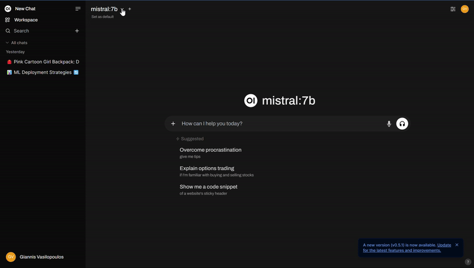
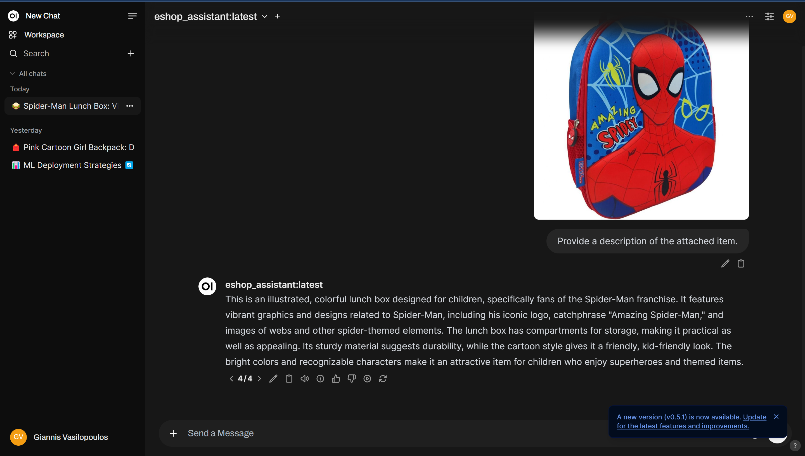

Imagine you’re an e-shop owner who regularly receives new items from vendors that need to be listed in your online store. This process involves several manual steps, with writing marketing descriptions for each item being the most time-consuming task. To automate this process, various solutions have been considered, and a Multimodal AI model appears to be an excellent solution. These Deep Learning models can process information from multiple modalities, such as images and text simultaneously.
As with most technology decisions, you face the classic dilemma: build your own solution using open-source materials or opt for a pay-as-you-go service from providers like ChatGPT or Claude.ai. You can find numerous articles explaining the differences between SaaS and custom software solutions to guide your decision. Simply put, building your own solution might be appropriate if you have a GPU-equipped computer, are cost-conscious, prioritize security and privacy, can tolerate some downtime, and enjoy hands-on development. All necessary components for such solutions are freely available and supported by a large community.
As you may know, Generative AI technologies—including development, hosting, and scaling—evolve rapidly. What you build today might be superseded by better and more cost-effective solutions tomorrow. Therefore, the approach presented here is just one of many possible solutions. To begin, follow the previous guide to install Ollama and Open WebUI.
For this project, we’ll use LLaVA, an Ollama-compatible model. The 7B parameters version of LLaVA proved sufficient for my use case. Pull it from the registry using:
ollama pull llava:7b
After running Open WebUI using the provided docker-compose file, you should be able to access it at http://localhost:3030/.
To customise this model, we need to write a system message that sets the context and establishes the model’s role. For our e-shop use case, we need a system message that configures an AI assistant specifically for writing product descriptions for educational supplies, with precise parameters of 80 words in 3-4 sentences. The message should include comprehensive guidelines about what to include (materials, features, benefits) and what to avoid (technical jargon, pricing), along with specific style requirements. You can find the used system message on my GitHub.
There are two methods to customize a base model: through Open WebUI’s interface or by building a new model with Ollama. Create a new model via Open WebUI is fairly easy and intuitive. While creating a model via Open WebUI is straightforward—simply visit Workspace > Models and click the + icon to create your model based on any installed Ollama model—I recommend using Ollama’s model building approach for greater agility, despite Open WebUI’s import/export capabilities for configuration sharing and backup.
First, obtain the base Modelfile for LLaVA by executing:
ollama show llava:7b --modelfile
Copy its contents and add your custom system message. The complete Modelfile for this use case is available on my GitHub. This approach allows you to track improvements to your Modelfile and system message as you optimize the model’s performance.
Using a Modelfile instead of Open WebUI customization is preferable because Ollama serves as the actual model server, which becomes important when extending your solution, such as implementing batch requests to the Ollama API.
To create your new model using the Modelfile, run:
ollama create eshop_assistant -f Modelfile
Verify the model’s presence in your local registry with:
ollama list
Finally, launch Open WebUI, start a new chat, select the eshop_assistant model, and upload an image to generate a product description.

